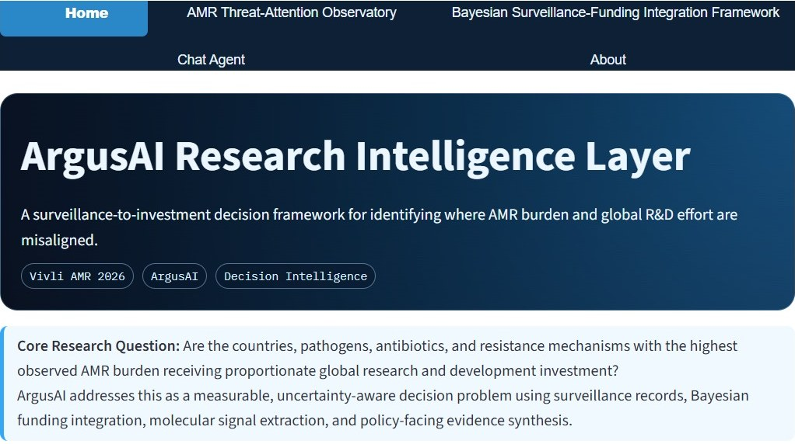

Computational biology · Antimicrobial resistance
I build Bayesian, uncertainty-aware AI for antimicrobial resistance and drug discovery: models that say not only what they predict, but how far to trust it.
Team lead, Argus AI · Global AMR R&D Hub Cross-Domain Award, 2026 Vivli AMR Surveillance Data Challenge
Trustworthy inference when data are uneven, incomplete and in disagreement.
Hierarchical Bayesian models that combine surveillance data from different labs, methods and years without pretending they are the same.
Argus AI · ResistAI+When genotype and phenotype disagree, I keep both sources and make the discordance visible and reviewable.
NaijaResist · AGARIScaffold-aware, honestly evaluated machine learning that tests predictions on new chemistry, not near-copies.
InhA · GRK5 · Morph-HSVMulti-omics survival models linking immune biology to clinical outcome, including low HLA class I expression as a predictor of poorer survival.
Cox models · RNA-seqFeatured project
A Bayesian hierarchical synthesis of 4.95 million isolate–drug observations, linked with global AMR R&D investment, to show where resistance burden, therapeutic vulnerability and funding are most dangerously misaligned, and how much that conclusion depends on how the data are weighted.

Each one makes its uncertainty visible. Dashboards run on free hosting, so an idle one may take about 30 seconds to wake.
Threat–innovation gap observatory with sensitivity analyses and traceable evidence.
Open dashboard → Code →Change-points, MIC creep and posterior-predictive forecasts. Finalist, top 10% of 100+ teams.
Open dashboard → Code →Machine-learning resistance prediction for Nigeria with genotype–phenotype reconciliation.
Open dashboard → Code →Resistance-aware ranking of 100 candidate inhibitors of HSV-1 DNA polymerase. Preliminary round submitted.
View code →Machine-learning-guided discovery and structural bioinformatics.
Discovery of novel InhA inhibitors through structural bioinformatics and machine learning-driven QSAR screening of natural productsBiology Methods and Protocols · 2026 · First and corresponding author In silico evaluation of 4-quinolone ligands interacting with GRK5 using message-passing neural networks, docking and molecular dynamicsEgyptian Journal of Medical Human Genetics · 2025 · First author Integrative machine learning and structural bioinformatics for selective sterol 14α-demethylase inhibitors targeting Trypanosoma cruziIn Silico Research in Biomedicine · 2026 · Contributing authorCross-Domain Award, 2026 Vivli Challenge · Winner, 2025 Advanced CADD Machine-Learning Drug Discovery Challenge · Finalist, 2025 Vivli Challenge · Oral Presentation Award, NextGen Africa Symposium
Led research-skills workshops for about 81 participants (African Community for Systematic Review and Meta-Analysis). Supervise undergraduate students in reproducible bioinformatics.
Bioinformatics Associate at BioSeq (AGARI E. coli data integration with Africa CDC / ASLM). Project Lead at Helix Biogen Institute.
Open to conversations about AMR surveillance, pathogen genomics, Bayesian methods, drug discovery, and PhD supervision.
© 2026 Godswill Imolele Anthony · Port Harcourt, Nigeria